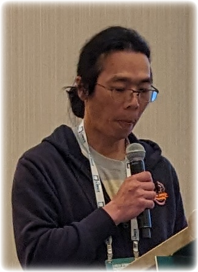

Recent improvements to BPF's struct_ops mechanism
Kui-Feng Lee spoke early in the BPF track at the 2024 Linux Storage, Filesystem, Memory Management, and BPF Summit about some of the recent improvements to BPF. These changes were largely driven by the sched_ext work that David Vernet had covered in the previous talk. Lee focused on changes relevant to struct_ops programs, but several of those changes apply to all BPF programs.
There are several mechanisms to attach BPF programs to the kernel at various points. One such mechanism is struct_ops, which lets a subsystem define a structure full of function pointers that can then have functions defined in BPF (only from the same compiled program) attached to them. When a user writes a BPF program, they declare an instance of that structure in a special section of the compiled program. When the BPF program is loaded, the kernel uses the contents of that section to populate the structure on the kernel side. BPF uses a different calling convention than the kernel, so the struct_ops structure is actually filled with function pointers to a set of newly allocated trampolines that perform the conversion. This is a flexible mechanism, but sometimes not quite flexible enough — occasionally, the user wants to override the value of some member of the structure at run time, based on the current state of the system. The first new feature Lee spoke about addresses that problem by allowing user space to "shadow" members of the structure. The user-space loading code now has functions available to override struct_ops members before loading the BPF program.

The size of the struct_ops structure has been fairly limited for a while, because BPF function pointers can't just be put in the structure directly. The BPF subsystem uses trampolines to convert between the kernel's calling convention and BPF's calling convention. Until recently, the BPF code has only allocated one page for trampolines. On x86, this limits struct_ops structures to 20 entries. Now, Lee said, the code supports up to eight pages for trampolines, greatly increasing the usable size.
Another small feature is support for verifier-tracked null pointers as arguments. Previously, the verifier assumed that arguments passed to BPF functions by the kernel were valid pointers — so it would let those values be dereferenced without a check, potentially causing problems if the kernel passed a program a null pointer instead. Now, developers can annotate arguments to BPF functions as being nullable, and the verifier enforces that they must be checked before they can be dereferenced.
The BPF code has also been changed to allow more flexibility in where struct_ops structures can be defined. Initially, only non-modular kernel code could define the structures, Lee said. Recently, that restriction has been relaxed, and now kernel modules can define their own struct_ops types. He called out one of the kernel selftests — bpf_testmod.c — as a good example of how that works.
Lee wrapped up by talking about mechanisms to support compatibility. APIs and types evolve over time, and BPF programs need to be able to cope with that. In the case of struct_ops, two backward-compatible ways to make changes are to add new operators, or to add arguments to existing operators. Lee made the point that the verifier checks a program's behavior, but it does not actually check the program's signature. So in the case of adding new arguments to a function, old programs won't touch the new arguments, which is valid behavior. In the case of adding new operators, things are slightly more tricky. But as long as they are added to the end of the structure, everything will still work out — the type in the kernel will have more fields than the corresponding type in the BPF program, but libbpf zeroes out the entire structure before loading. It also ignores trailing fields that are zeroed out in the BPF program but absent in the kernel. So subsystems and modules are free to add to struct_ops interfaces without requiring existing BPF programs to be rewritten.
One member of the audience asked whether there was any existing tooling to check function signatures as opposed to behaviors. Lee replied that there was not.
That isn't the only way BPF supports backward-compatible interfaces, however; another somewhat magical feature is names with suffixes. Specifically, if libbpf sees a suffix attached to a type with three underscores, Lee explained, it ignores everything after the underscores. This means that a BPF header could define two structures player___v1 and player___v2, and they would both be mapped to player in the kernel. This lets a BPF program implement multiple versions of the same interface, should that turn out to be necessary.
A remote participant noted that all of this supported decoupling kernel versions from BPF programs, but asked Lee whether there were any mechanisms to support decoupling in the other direction, i.e. to let a BPF program not need to know what module is loading it in order to call generic functions from that module. Another member of the audience replied that there was no special functionality to support uses like that, but that it may be achievable in practice. Different kernel modules can define kfuncs with the same name and signature, so long as only one is loaded at any given time. A BPF program that communicated only through such kfuncs could potentially be used by multiple different kernel modules.
While these features are individually fairly small, they still represent an increasing amount of attention being paid in the BPF space to forward and backward compatibility. We will have to see whether this represents a change in the position that BPF remains an unstable kernel-to-kernel interface.
| Index entries for this article | |
|---|---|
| Kernel | BPF/struct_ops |
| Conference | Storage, Filesystem, Memory-Management and BPF Summit/2024 |